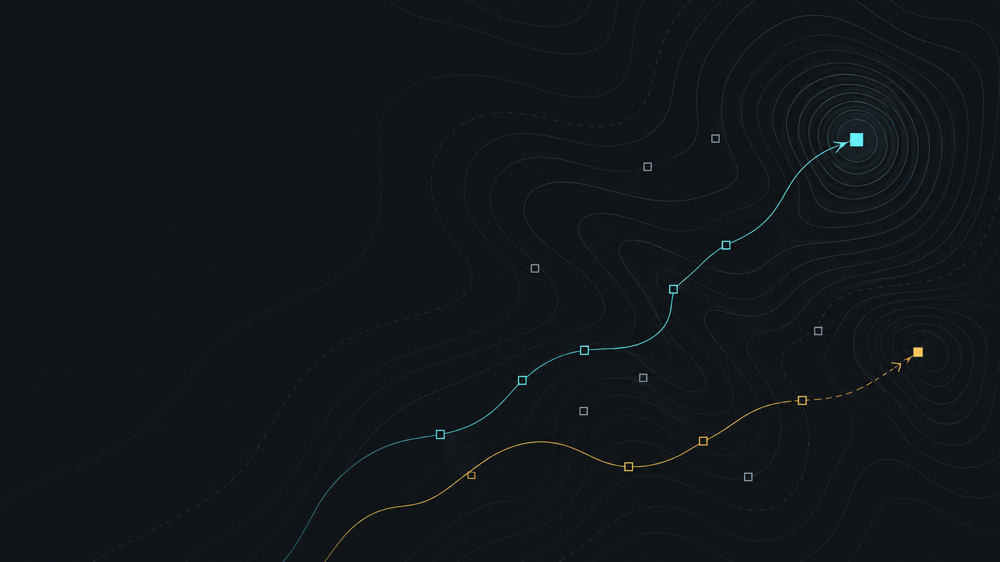

Opaque oracle
No problem name, source code, known optimum, or verifier is handed to the agent.
AGENTIC DERIVATIVE-FREE OPTIMIZATION
An agent-based derivative-free optimizer for budget-limited black-box minimization. Give it an opaque objective and a starting point; it adapts its numerical strategy through one continuous session.
import numpy as np
from nexteval import solve
result = solve(
lambda x: float(x @ x),
np.array([2.0, -1.0, 0.5]),
options={
"execution_mode": "task",
"model": "env",
"maxfev": 80,
"trace": "trajectory",
},
)01 / WHAT IT IS
The model selects numerical tools and sampling actions. The kernel validates every action, owns the objective ledger, and preserves the best valid observation. Reads cost no function evaluations; every real objective call is accounted for.

02 / THE SESSION
A task-mode run is one complete agent task. The conversation, numerical state, and evaluation ledger remain connected while the agent decides whether to continue, switch methods, or finish.
03 / THE CONTRACT
No problem name, source code, known optimum, or verifier is handed to the agent.
Trust-region models, polling, line search, coordinate search, Newton steps, and geometry repair are exposed through bounded calls.
Provider clients and external harnesses can own authentication and transport without changing the kernel contract.
Evaluation history, model activity, tool calls, and termination state stay separate and auditable.
EVALUATION / OF AGENTS
NextEval Bench compares how different agents use their observations and evaluation budgets to optimize.